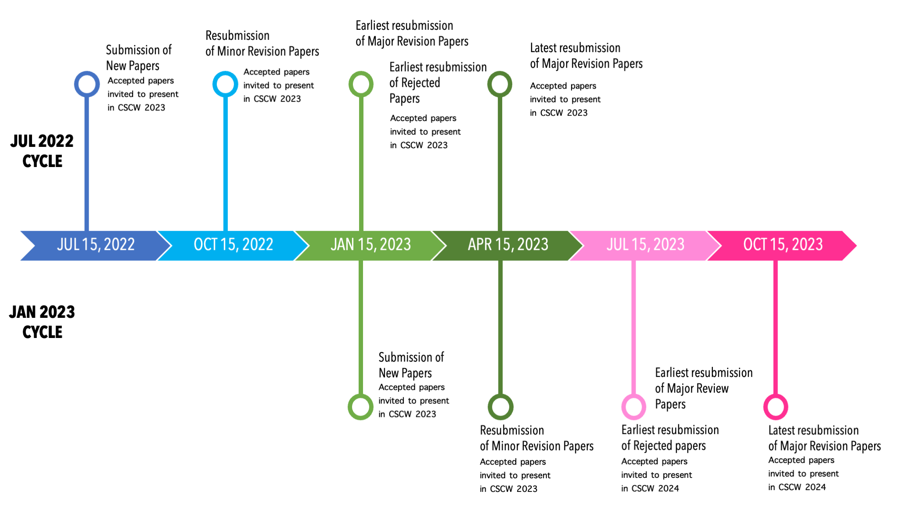

The 26th ACM Conference On Computer-Supported Cooperative Work And Social Computing
The 2023 ACM SIGCHI Conference on Computer-Supported Cooperative Work & Social Computing (CSCW) will occur in Minneapolis, MN USA (with additional hybrid/virtual participation) October 13-18, 2023.
This site will continue to be updated with more information, including the full organizing committee. In the meantime, you can contact the general chairs, Casey Fiesler and Loren Terveen, at chairs2023@cscw.acm.org.
Below you will find information about submitting full papers to PACM-HCI for the July 2022 and January 2023 submission cycles, for presentation at CSCW 2023. Questions about paper submissions for these cycles should be directed to the 2023 papers chairs at papers2023@cscw.acm.org.
Submitting a Paper
CSCW is the premier international venue for research in the design and use of technologies that affect groups, organizations, communities, and networks. We invite authors to submit their best research on all topics relevant to collaborative or social computing. Accepted papers are published in two annual CSCW issues of the journal series Proceedings of the ACM on Human Computer Interaction (PACM HCI).
CSCW 2023 will follow the half-yearly submission model implemented in CSCW 2022. Thus, new paper submissions will be only possible for the July 2022 and January 2023 deadlines.
We have two additional deadlines in October and April for revisions only. Below an overview of the submission timeline.
Important Dates
July 2022 Cycle
- July 15, 2022: New paper submissions due 23:59 Anywhere on Earth (AoE) time.
- October 15, 2022:
- Resubmission of papers that received a Minor Revision recommendation due 23:59 AoE.
- Important: Failing to resubmit the revised version of a Minor Revision paper of the July 2023 Cycle in this deadline means that the paper must be resubmitted as a new submission to a future cycle and will be assigned to new ACs and reviewers.
- January 15, 2023:
- Earliest resubmission of papers that received a Major Revision recommendation due 23:59 AoE.
- Earliest resubmission of papers that received a Reject recommendation as new submissions.
- April 15, 2023:
- Latest resubmission of papers that received a Major Revision recommendation due 23:59 AoE.
- Important: Failing to resubmit the revised version of a Major Revision paper of the July 2023 Cycle in this deadline means that the paper must be resubmitted as a new submission to a future cycle and will be assigned to new ACs and reviewers.
- Accepted papers are invited to present at CSCW 2023.
January 2023 Cycle
- January 15, 2023:
- New paper submissions due 23:59 AoE.
- Accepted papers are invited to present at CSCW 2023.
- April 15, 2023:
- Earliest resubmission of papers that received a Minor Revision recommendation due 23:59 AoE.
- Important: Failing to resubmit the revised version of a Minor Revision paper of the January 2023 Cycle in this deadline means that paper must be resubmitted as a new submission to a future cycle and will be assigned to new ACs and reviewers.
- Accepted papers are invited to present at CSCW 2023.
- July 15, 2023:
- Earliest resubmission of papers that received a Major Revision recommendation due 23:59 AoE.
- Earliest resubmission of papers that received a Reject recommendation as new submissions.
- Important: Failing to resubmit the revised version of a Minor Revision paper of the January 2023 Cycle in this deadline means that the paper must be resubmitted as a new submission to a future cycle and will be assigned to new ACs and reviewers.
- Accepted papers are invited to present at CSCW 2024.
- October 15, 2023:
- Latest resubmission of paper that received a Major Revision recommendation due 23:59 AoE.
- Important: Failing to resubmit the revised version of a Major Revision paper of the January 2023 Cycle in this deadline means that the paper must be resubmitted as a new submission to a future cycle.
- Accepted papers are invited to present at CSCW 2024.
The submission site will open 2 weeks before each deadline. No deadline extensions will be granted.
Call for Papers
We invite authors to submit papers that inform the design or deployment of collaborative or social systems; introduce novel systems, interaction techniques, or algorithms; or study existing collaborative or social practices. The scope of CSCW 2023 includes social computing and social media, crowdsourcing, open and remote collaboration, technologically enabled or enhanced communication, such as video-conferencing and other remote-presence technologies, CSCL, MOOCs and related educational technologies, multi-user input technologies, collocated work practices, work articulation and coordination, awareness, and information sharing. This scope spans socio-technical domains of work, home, education, healthcare, the arts, sociality, entertainment, and ethics. Papers can report on novel research results, designs, systems, or new ways of thinking about, studying, or supporting shared activities.
CSCW encourages papers that contribute to building CSCW systems, including (but not limited to) engineering and technical enablers for CSCW applications, methods, and techniques for new CSCW services and applications, and evaluation of both early-stage and fully built CSCW systems in lab or field settings.
To support diverse and high-quality contributions, CSCW uses a two-cycle review process with opportunity for major revisions reviewed by the same reviewers. Additionally, no arbitrary length limit is imposed on submissions. Accepted papers are published in the Proceedings of the ACM: Human Computer Interaction (PACM HCI) journal.
We invite contributions to CSCW across a variety of research techniques, methods, approaches, and domains, including:
- Social and crowd computing. Studies, theories, designs, mechanisms, systems, and/or infrastructures addressing social media, social networking, wikis, blogs, online gaming, crowdsourcing, collective intelligence, virtual worlds, or collaborative information behaviors.
- System development. Hardware, architectures, infrastructures, interaction design, technical foundations, algorithms, and/or toolkits that enable the building of new social and collaborative systems and experiences.
- Theory. Critical analysis or theory with clear relevance to the design or study of social and collaborative systems, within and beyond work settings.
- Empirical investigations. Findings, guidelines, and/or studies of practices, communication, collaboration, or use, as related to collaborative technologies.
- Data mining and modeling. Studies, analyses, and infrastructures for making use of large- and small-scale data.
- Methodologies and tools. Novel methods, or combinations of approaches and tools used in building collaborative systems or studying their use.
- Domain-specific social and collaborative applications. Including applications to healthcare, transportation, gaming, ICT4D, sustainability, education, accessibility, global collaboration, or other domains.
- Collaboration systems based on emerging technologies. Mobile and ubiquitous computing, game engines, virtual worlds, multi-touch, novel display technologies, vision and gesture recognition, big data, MOOCs, crowd labor markets, SNSs, or sensing systems.
- Ethics and policy implications. Analysis of the implications of socio-technical systems and the algorithms that shape them.
- Crossing boundaries. Studies, prototypes, or other investigations that explore interactions across disciplines, distance, languages, generations, and cultures, to help better understand how to transcend social, temporal, and/or spatial boundaries.
Send queries about paper submissions to papers2023@cscw.acm.org.
Submission Process Details
CSCW 2023 is using the Precision Conference System (PCS) 2.0: https://new.precisionconference.com. Authors submitting papers for peer-review to ACM publications must comply with the SIGCHI Submission and Review Policy including, but not limited to:
- That the paper submitted is original, that the listed authors are the creators of the work, that each author is aware of the submission and that they are listed as an author, and that the paper is an honest representation of the underlying work.
- That the work submitted is not currently under review at any other publication venue, and that it will not be submitted to another venue unless it has been rejected or withdrawn from this venue.
For information about re-publication in English of work previously published in another language, please refer to section 1.5.4 of the ACM SIGCHI policy.
Parallel submissions: Authors submitting multiple papers related to the same study are required to provide information about the relationship among them, as well as how they are different from one another. Authors should use the “Comments (optional)” field on the Submission form to provide this information.
Confidentiality of submitted material will be maintained. Upon acceptance, the titles, authorship, and abstracts of papers will be used in the Advance Program. Submissions should contain no information or material that is or will be proprietary and/or confidential at the time of publication and should cite no publication that will be proprietary or confidential at that time. Final versions of accepted papers must be formatted according to detailed instructions provided by the publisher. Copyright release forms must be signed for inclusion in the PACM HCI and the ACM Digital Library.
Formatting and Length
Word authors: Because CSCW papers are published in PACM HCI that uses the Sheridan service, authors need to use the old interim ACM Small template, which is no longer published on ACM websites. Please use the following link to access the templates: https://dl.acm.org/journal/pacmhci/submission-templates
LaTeX authors need to use the template which is available at https://www.acm.org/publications/authors/submissions, and insert the acmsmall call.
Overleaf authors need to use the template at https://www.overleaf.com/latex/templates/acm-journals-new-master-template/vgtfrcvmrvxf, and use the acmsmall call.
Note: In preparing revisions, authors should continue using the template they had used for their original submissions.
No minimum or maximum length is imposed on papers. Rather, reviewers will be instructed to weigh the contribution of a paper relative to its length. Typical papers are under 10,000 words.
Note: Valuable but concise contributions are welcome as short papers. Shorter, more focused papers will be reviewed with the expectation of a small, focused contribution. Papers whose length is incommensurate with their contribution will be rejected.
Anonymous Review Policy
Papers are subject to anonymous reviewing. Submissions must have authors’ names and affiliations removed and avoid obvious identifying statements. Any grant information that identifies the author(s) and their institution should be removed as well. Papers that violate this policy will be desk rejected. Please check in particular the front page, headers and footers, Acknowledgement section, AND meta-data of the submitted file.
Citations to authors’ own relevant work should NOT be anonymous, but rather should be done without identifying the authors. For example, “Prior work by [authors]” instead of “In our prior work.”
CSCW does not have a policy against uploading preprints to SSRN or arXiv before they are submitted for review at the conference.
Nevertheless, to ensure the integrity of the peer review process, we ask that no authors publicize the work until that process is complete. Please do not share any confidential info specific to a current review process publicly* or on social media. (*Exception: Doing public exhibitions, festivals, and performances as part of the research where the name is integral to the work).
We also ask the reviewers to refrain from taking steps to learn about the author’s identity during the peer review process.
Decisions and Deadlines
CSCW will be returning submissions to the primary contact author with one of the following decisions, along with the reviews, roughly 11 weeks from the initial submission. For the CSCW July 2022 submission deadline, we hope to send out notifications on September 30th, 2022. Review turnaround for accepted papers and final checks will be shorter:
- Accept: Submissions that receive this decision are ready or nearly ready for publication, though they may require a few small changes. The final version of the paper must be submitted in the next deadline (or earlier) for verification by the corresponding associate chair. The submission will appear in an upcoming issue of the PACM HCI.
- Minor revision: Submissions that receive this decision will require some revisions before being accepted for publication. The revised submission MUST be submitted within the next deadline, along with a brief response to the reviewers’ comments. The revision will be verified by the corresponding associate chair and if approved, the submission will be promoted to an accepted paper.
- Major revision: Submissions that receive this decision have real potential, but will require major portions rewritten or redone, and then re-reviewed. Given the amount of effort that should be invested in a major revision, the earliest resubmission of a revised major revision is after two deadlines of the initial submission. Latest submission will also be acceptable three deadlines after the initial submission. For example, a July 2022 submission receiving a Major Revision decision can be first resubmitted to the January 2023 deadline and must be resubmitted by the April 2023 deadline at the latest. The authors must ensure that the paper has been revised sufficiently to warrant re-review. To the extent possible, resubmissions will be assigned the same AC and reviewers for re-review. Upon re-review, submissions can receive one of two decisions: Accept with minor revisions or Reject. Unlike most journals, the current CSCW review process does NOT allow for more than one major revision recommendation due to reviewer availability and time constraints.
- Reject: Authors of rejected papers are allowed to resubmit their papers in the next cycle as a new submission after receiving the Reject decision. For example, if the paper was rejected after a submission in July 2022, authors can re-submit the paper as a new submission in the following January 2023 cycle. However, papers resubmitted with no or marginal changes will be desk rejected without review. Authors must describe the paper’s submission history and briefly outline the changes in a designated field in PCS when resubmitting. Failure to disclose the paper’s submission history may lead to a desk reject decision. ACs and reviewers will have access to this description of the paper’s submission history and may also request to review the detailed submission history.
- Desk / Quick Reject: Authors should only submit completed work of publishable quality and within the scope of ACM CSCW. The ACs and Editors may Quick Reject any submission that they believe has little chance of being accepted if it goes through the peer review process. Incomplete or otherwise inappropriate submissions will be desk rejected without review.
CSCW Decision Appeal Process
We recognize that authors may sometimes feel a review is unfair, inappropriate, or problematic in other ways. CSCW has implemented the following process for authors who wish to appeal a decision:
- Either:
- Authors directly contact the Papers Chairs to officially appeal a decision
- A committee member (1 AC / 2AC / Editor / Papers Chair) raises an issue about the decision or decision-making process, possibly in response to a communication from an author
- The appeal involves motivating the case with evidence
- Papers Chairs assess the situation and make an initial call to bring it up for discussion with the Editors
- The Editor assigned to the submission reviews the paper, the reviews, and the discussion in PCS to determine if the case is valid. The Editor may choose to involve the ACs at this stage
- Other Editors weigh in and review the case
- The Editors come to a collective decision and share their decision with the Papers Chairs
- The Papers Chairs discuss the Editors’ decision. If a change is agreed, Papers Chairs record the updated decision in PCS
- The Papers Chairs communicate the final decision to the authors
- If the authors are dissatisfied with the outcome of this process, the case will then be referred to the CSCW Steering Committee
Primary Research Paradigm Selection for Reviewing
When uploading the paper to the PCS reviewing system, authors will be able to indicate the primary research paradigm of their paper for appropriate reviewer assignment:
- Technical/Systems, e.g., building novel systems, algorithms, implementing novel features in existing systems, etc.
- Empirical-Qualitative, e.g., ethnography, workplace studies, qualitative user studies, etc.
- Empirical-Quantitative, e.g., “big data,” quantitative user studies, statistical methods, etc.
- Mixed Methods, e.g., combined qualitative and quantitative empirical research, design explorations combined with technical feature development.
- Design, e.g., design implications, guidelines, methods, techniques, etc.
- Theoretical, e.g., conceptual frameworks, theory underpinning CSCW studies/domains, theoretical analysis, and essays.
Open and Transparent Science
Authors are encouraged to submit supplementary material when possible and when aligned with their methods. Authors are encouraged to submit links to pre-registrations on the Open Science Framework (OSF) when appropriate for their work. Authors are also encouraged to use open access repositories and make their data and other material FAIR when appropriate for their work. Authors are encouraged to describe efforts to make their work more reproducible. Reviewers are encouraged to support evolving approaches to supporting open and transparent research practices.
Video Figures
Authors should consider submitting a video that illustrates their work as part of the submission (no more than three minutes long). Videos are not required for paper submissions, but are strongly encouraged, particularly for papers contributing novel systems or interaction techniques.
Presenting at the Conference
Accepted papers are invited to present at the corresponding conference for that deadline, and authors can choose whether or not they wish to present. Because the situation may be changing and times are uncertain, authors are encouraged to discuss alternative options with the Papers Chairs. Presenting at the conference is strongly recommended but not required.
Editors
TBA
Papers Co-chairs
- Munmun De Choudhury (Georgia Tech, USA)
- Xianghua Ding (University of Glasgow, UK)
- Shion Guha (University of Toronto, Canada)
- Fabiano Pinatti (University of Siegen, Germany)
General Co-chairs
- Casey Fiesler (University of Colorado Boulder, USA)
- Loren Terveen (University of Minnesota, USA)